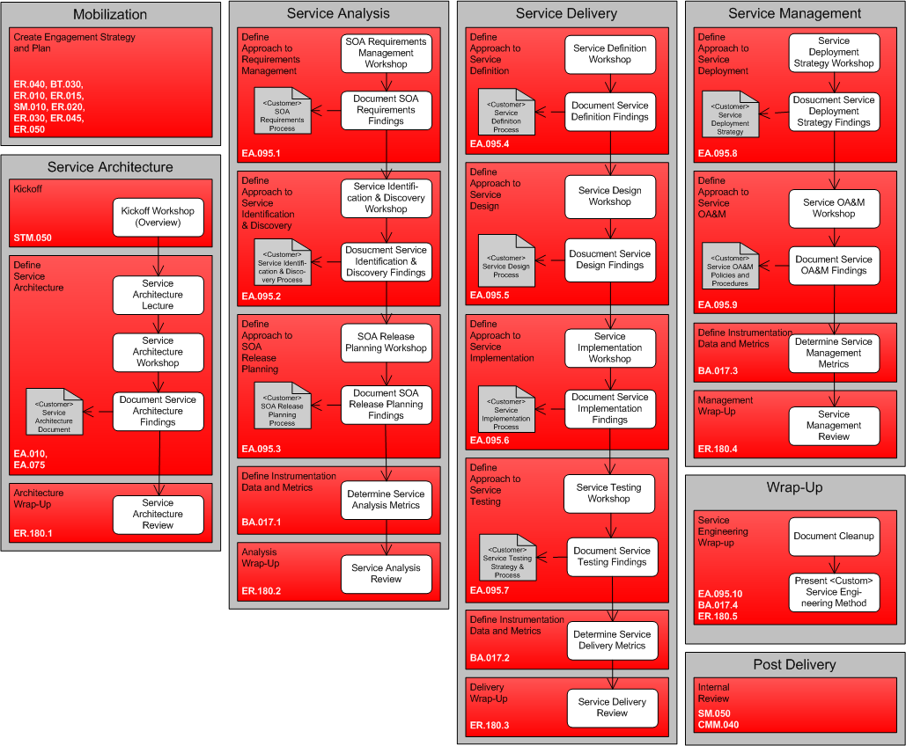

OUM |
SOA Engineering Planning Supplemental Guide |
||
Method Navigation |
Current Page Navigation |
||
|
|
||||||||
The SOA Engineering Planning view and Supplemental Guide are used to help organizations adjust or complement their project delivery methodology to support SOA execution. Many enterprises struggle with SOA adoption. One area of particular concern is the delivery of projects within their SOA. Many enterprises attempt to apply traditional software engineering methodologies (such as Unified Process, agile, waterfall, etc) that have not been adopted to handle the wider, cross-project reuse that must be addressed for projects participating in a SOA strategy. The SOA Engineering Planning view supports a service where the organization is taken through a series of facilitated workshops aimed at developing their own enterprise methodology for SOA projects.
The SOA Engineering Planning view also looks at instrumentation for monitoring and management. Instrumentation is a fundamental of achieving success with a SOA strategy and spans a much broader area than simply instrumenting the runtime components of the SOA participants. Instrumentation for SOA includes collecting information in support of improving engineering efficiency and effectiveness, measuring and improving against SOA maturity level, understanding business value by linking this analysis to the underlying workings of SOA, in addition to assisting with making SOA operationally manageable. Therefore, this view looks into what kind of instrumentation is required to collect appropriate data through the new engineering processes.
As with all SOA planning views, this view is used to plan one particular aspect of the SOA strategy and can be combined with other SOA planning views based on the organization’s needs.
It is important to note that OUM already has an approach for delivering SOA projects. The SOA Engineering Planning view should be used when the enterprise wants to develop their own enterprise-specific approach and adapt their own internal methodology to include such an approach. For more information on the OUM SOA approach, refer to the SOA Project Delivery view.
Service-Oriented Architecture (SOA) is an Information Technology (IT) strategy that, in many cases, spans the entire enterprise. IT projects are implemented to fit within a service-oriented architecture and are therefore just a piece of the larger SOA initiative. Further, the extensive scope that a SOA may have across an enterprise requires that a repeatable process and sound engineering disciplines be applied through delivery cycles. This is especially true if external or offshore resources are to be utilized. Many enterprises struggle with inconsistency across deliveries for projects that need to coexist. This problem is also an inhibitor to reuse and agility and can be addressed by the adoption of a sound enterprise class SOA methodology. If projects are developed independently, without consistent tie-in and guidance from the overall SOA leadership team, the effectiveness and value of each delivery is substantially reduced. Fundamental to successful SOA adoption is the establishment of an enterprise methodology for SOA that is used to tie project delivery and operations into the overall SOA governance structure and reference architecture, as well as apply the best usage of investment in service infrastructure.
This view can best be used when the enterprise does not have an appropriate methodology for SOA. Typical indicators of the lack of an enterprise methodology for SOA are:
It may also be used in combination with the SOA Modeling Planning view that is used when a modeling strategy is lacking. It is also recommended to be proposed as part of any strategic SOA engagement. It is an important part of the SOA governance effort and all organizations should at least consider it.
An engagement based on this view can be focused on the development of an enterprise methodology for SOA for the organization or may be combined with a pilot project delivery. If it is combined with project delivery, it is recommended to finalize the major areas of the engagement before starting the delivery of this phase within the project. This type of engagement is focused on creating a baseline for the organization. It is important that the organization takes over ownership to further evolve the methodology by reflecting feedback from projects.
Also, if the organization already has an appropriate methodology for SOA, but has not included any instrumentation for monitoring and management to measure the effectiveness of the methodology, then you may choose to use parts of the view, specifically, the instrumentation and metrics, for each of the areas included in the view. As stated earlier, OUM already has an approach for delivering SOA projects. The SOA Engineering Planning view should be used when the enterprise wants to develop their own enterprise-specific approach and adapt their own internal methodology to include such an approach. For more information on the OUM SOA approach, refer to the SOA Project Delivery view.
Service-Oriented Architecture (SOA) requires planning that spans the enterprise or area of focus within the business that is applying it. Projects may not be simply architected, constructed and delivered independently in an effective SOA. Consistency and planning must be established across deliveries to ensure that the delivery maximizes the benefit of the SOA, as well as contributes to the overall SOA effectiveness.
Enterprise SOA requires that the method for delivering projects that will utilize SOA must be executed with a consistent strategy from inception through delivery and into steady state. This consistent strategy can be either planned for and developed in advance of any project, or developed at the same time as delivering a pilot project. The focus of an engagement based in this view is the development of a enterprise-specific SOA approach separate from the delivery of a project. This allows the approach to be developed more thoroughly. The strategy can then be refined with each additional delivery going forward.
It is clear that enterprise SOA engineering spans more than simply identifying and engineering services. Aside from influencing the software development lifecycle in many areas, this framework also impacts operations, and the overall enterprise architecture.
The delivery process then becomes a natural extension of the adopted SOA, rather than separate entities with unique goals. Further, the delivery process for SOA-based projects needs to be augmented with additional activities in order to ensure the following:
Instrumentation, with respect to business and particularly IT has been around for a long time. However, it has not generally been utilized as a core component of any particular IT strategy. Quite often, it is introduced as an afterthought, or as a missed requirement. Many view the addition of instrumentation to be a bottleneck or unnecessary overhead. This reasoning typically stems from those who have been forced to add instrumentation as a reactive measure after a project has been completed.
When addressed up front and architected for accordingly such as we suggest in this view, instrumentation may be engineered to have as little footprint as possible, and in some cases is minimal. This is rarely the case when it is added in band-aid fashion after project completion.
When applied correctly, the cost of instrumentation related to the SOA engineering cycle pales in comparison to the benefits. From a business and IT perspective instrumentation provides the following (to name a few):
When applied correctly, instrumentation provides the same benefits at a business level that we, as consumers of instrumentation use it for:
This SOA Engineering Planning view places instrumentation as a core component of the SOA strategy. It emphasizes instrumentation as a discipline required to more effectively implement an SOA strategy; and includes, but is not limited to just the projects and applications built within. By utilizing instrumentation as part of the SOA strategy, IT’s ability to support the business will become more natural. Further, the business’s understanding of the benefits provided by IT will become more apparent as IT becomes more proficient in responding to business demands. This is only possible if IT utilizes instrumentation to measure and collect performance data and then acts upon it to improve and mature as an organization.
SOA, like any IT strategy, must be aligned to support the business needs. Most businesses have already established core business measurement metrics which are used to measure against defined business objectives. Due to increased IT spending over the last decade a common business objective is to reduce IT spending while still supporting the business strategy – IT is being asked to do more with less. IT, like other business units, must utilize metrics to measure its performance in support of the business.
Instrumentation for monitoring and management that is a part of this view represents an integral input into SOA strategy and planning with respect to defining the metrics which will be used to measure SOA execution and utilized to make improvements.

There are seven areas in the SOA Engineering Planning view, each with its own set of tasks.
MOBILIZATION – Mobilization begins with the qualification of the effort to scope the engagement to best meet the needs of the organization. An engagement may be based solely on this view, but may also be increased to cover multiple views to produce a more full-featured planning and delivery engagement. In particular it may be combined with the SOA Modeling Planning view. It may also be scoped back to focus on only a subset of the six areas covered in this view, streams, tasks, and work products, while omitting others. Additional guidance on Mobilization can be found in the SOA Engineering Planning Task Guidelines.
SERVICE ARCHITECTURE – Service Architecture starts with the engagement kickoff and educating the organization in the concepts of a SOA engineering. It also helps familiarize them with the terminology that will be used throughout the engagement. Additional guidance on Service Architecture can be found in the SOA Engineering Planning Task Guidelines.
SERVICE ANALYSIS – During Service Analysis you develop the Service Analysis portion of the SOA engineering approach. The procedures and policies covered by Service Analysis coincide closely with the types of activities typical of traditional software engineering analysis practices but additionally take into account the needs of the SOA. When you have developed the Service Analysis portion of the SOA engineering approach, use it as an input to determine engineering metrics and instrumentation data related to Service Analysis that the organization feels is most important to them. Additional guidance on Service Analysis can be found in the SOA Engineering Planning Task Guidelines.
SERVICE DELIVERY – Service Delivery covers the core engineering processes and guidelines required to define, design, construct and test services. When you have developed the Service Delivery portion of the SOA engineering approach, use it as an input to determine engineering metrics and instrumentation data related to Service Delivery that the organization feels is most important to them. Additional guidance on Service Delivery can be found in the SOA Engineering Planning Task Guidelines.
SERVICE MANAGEMENT – Service Management covers the activities to transition and operate services. When you have developed the Service Management portion of the SOA engineering approach, use it as an input to determine engineering metrics and instrumentation data related to Service Management that the organization feels is most important to them. Additional guidance on Service Management can be found in the SOA Engineering Planning Task Guidelines.
WRAP-UP – During Wrap-Up, all work products are finalized for the engagement and prepared for project sign-off. The completed approach is presented back to the organization to wrap-up the engagement. Additional guidance on Wrap-Up can be found in the SOA Engineering Planning Task Guidelines.
POST DELIVERY - Following the successful completion of an engagement, a few post-delivery activities should take place, i.e., acceptance sign-off and documenting lessons learned. Additional guidance on Post Delivery can be found in the SOA Engineering Planning Task Guidelines.
Refer to the SOA in OUM page for access as well as descriptions for all the SOA views in OUM.
The SOA Engineering Planning process has been mapped to the Envision focus area of Oracle Unified Method to help show which tasks would typically be performed during each of the six areas from Mobilization to Wrap-Up.
See the mapping document and SOA Engineering Planning view for applicable OUM tasks.

Copyright © 2006, 2016, Oracle and/or its affiliates. All rights reserved.